Programming guidelines for relay switching: Avoid excessive relay stressing of V93000 digital cards
Li Tong, Verigy
Paper ID: 107295 May 2011
Abstract
During test program development and optimization, test engineers typically focus on aspects such as stability and repeatability, or throughput, while paying less attention to things such as "gentle" treatment of tester hardware. One example for gentle treatment of tester hardware is the application of correct relay switching. By doing the correct way of programming, we can prolong the relay lifetime, improve MTBF and increase throughput. This paper describes the do's and Do nots as best practice and gives guidelines for good relay programming. When you have a program in production causing high relay module consumption, you can refer to the following paper and review the program. There is a SADC Escort tool will be released in June 2010, which you can use to run a TP checking for hot switching or excessive relay stressing. The link of the tool will be provide when it's ready.
Key Words
relay, hot switching, glitch, MTBF, life time, pre-charge, clamp.
SmarTest Release & Test System Configuration Used
- P/C/Ce
- Pin Scale 800/3600
- Pin Scale 400
1. Introduction
This paper focuses on the correct relay switching of V93000 digital cards, i.e. PPMU, AC and DC relays. Note, however, similar recommendations hold true for Analog/ high speed/DPS card relays and DUT board relays, which are not included in this paper.
2. General considerations with respect to relay switching
The relays in the V93000 digital channel board
Generally, both mechanical relays (reed relays) and solid state relays are used in V93000 platform.
A reed relay is a mechanical relay operated by an applied magnetic field. There are different reed relays used in V93000 channel board. They all have a similar life time. For this type of reed relay, it is typically 1000 million switching cycles at 1V and 10mA. Hot switching with a current larger than 10mA can lead to aging of the relay. Below is a typical spec of the reed relay used in Pin Scale 800.
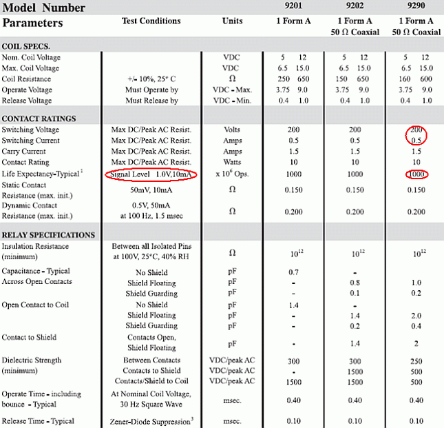
Table 1: Spec of the reed relay
A solid state relay (SSR) is a solid state electronic component that provides a similar function to the mechanical relay, but does not have any moving components. This gives it a much longer life time and improved reliability. Also hot switching does not lead to aging of the solid state relay.
Below is a table of the different relay types used in a digital channel board:
|
DC relay |
AC relay |
PPMU relay |
|---|---|---|---|
P/C/Ce |
reed relay |
reed relay |
reed relay |
Pin Scale 800/3600 |
reed relay |
reed relay |
reed relay |
Pin Scale 400 |
reed relay |
SSR |
|
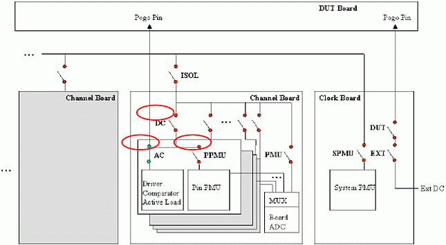
Figure 2: Relays in the digital channel board
What to avoid during relay switching
If the relay switching is not done in a proper way in the test program, there might be some effect should be avoid.
Hot switching
The term hot switching here indicates that a switch (relay) is actuated while having a voltage difference across its contacts. This means that a current will flow immediately when the contacts are closed.
For the V93k, a special case is forcing a current with PPMU, with the PPMU relay open and no clamps activated. In this case, the output of PPMU will go to a high voltage, which will cause hot switching when the relay is closed.
In addition, when the relay is opened while a current is flowing, arcing may result when the current is interrupted.
For example, when closing the PPMU relay in IFVM mode without clamp and pre-charge, currents as large as 200mA can be observed in a Pin Scale 800 digital channel system. And on a single-density system, the current can be as large as 77mA due to different hardware design. This can reduce the lifetime of the relays.
If large capacitors on the DUT board are connected to the channel, the transient current for charging the capacitors will be even higher when closing the relay with hot switching.
Hot switching with big current eventually damages the relay, for example, increase the relay impedance.
Glitch
The term glitch here indicates a spike or sudden change in voltage. In some cases, glitch happens with hot switching.
Glitch might lead to yield or quality problems.
Unnecessary relay switching
In some test programs, a lot of disconnect/connect, or relay switching commands are used, which are not really necessary. This wastes test time and reduces the life time of the relays. In one example, this resulted in 1.8 million relay switches per-day in production.
Programming guidelines
You should carefully follow Verigy's guidelines for relay switching. This will ensure longest lifetime of the relays and can improve the throughput.
Here are some general guidelines, further details are given below in later chapters.
- Use clamp or do pre-charge for DC force and measure, especially for large currents.
- Set digital channels to high-Z status (using DLSO or SQST OFF) or disable Active Load before switching AC relays.
- Merge the DC tasks to minimize the relay switching times.
- Avoid unnecessary DISCONNECT/CONNECT in the test program.
Detailed guidelines for specific situations
PPMU relay
When the PPMU is in IFVM mode, it tries to reach the programmed force current by increasing its voltage.
If at the beginning, the PPMU relay is open, the programmed current will not be reached, so the voltage will go up to the maximum possible value the PPMU can provide, even when the specified force current is 0 (force 0 current actually means force 5% of the current range).
When the PPMU relay is then closed, there will be a current spike until the current settles to the programmed value. This is one of the most critical cases, because it produces both glitch and hot switching.
In Figure 2 and Figure 3, a 10 Ohm resistor is connected between the DUT and a PS800 digital channel. The traces have been captured during forcing a small current and measure voltage. The current flow can be calculated by knowing the voltage drop across the resistor.
In Figure 2, with pre-charge, no hot switching and glitch is present.
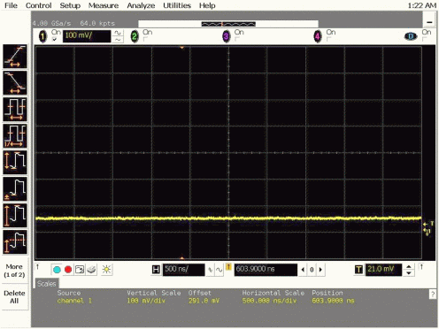
Figure 2: Current flow when PPMU relay is closed after pre-charge
As in Figure 3, the test is done in a wrong way that the channel is set to IFVM mode before closing the PPMU relay. A glitch of 1630 mV can be seen, which indicates a 163 mA current flowing with hot switching. The resolution of the timing is 1 μs /grid.
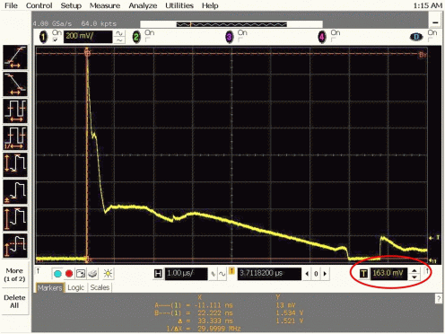
Figure 3: Current flow when PPMU relay is closed with hot switching
The term pre-charge here means supplying the same voltage from the digital channel to the DUT pin and then closing the relay before any further action. The way it is done on the Pin Scale system is different to how it is done on the single-density setup. This is described later in this paper.
Opening the PPMU relay in IFVM mode also causes hot switching. If the current is large, add one more step to force a small current or force a correct voltage before open the PPMU relay.
When the PPMU is in VFIM mode, and if the current is larger than 10mA, it is also not good to close and open the PPMU relay. In this case, do a pre/post-charge.
For example, for an IOL test, the test limit is min/max = 20 mA / 40 mA.
Original approach:
- vforce (0.5 V)
- relay close
- measure
- relay open
There is hotswitching with 20 ~ 40 mA
Suggested approach:
- vforce (5 mV)
- relay close
- vforce(0.5 V)
- measure
- vforce(5 mV)
- relay open
There is no hotswitching
For the Standard Testmethod/DC_TML such as "OutputDC", the pre-charge is automatically included. For "General PMU", you need to specifically specify it.
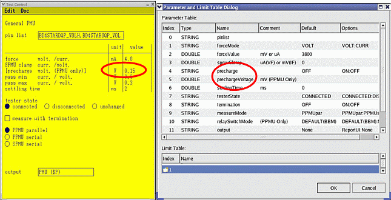
Figure 4: General PMU Standard Testmethod/DC_TML with pre-charge
AC relay
When the active load is enabled and the defined Iol/Ioh values are lager than 10mA, hot switching becomes critical. To avoid this, use DLSO or SQST OFF to set the channel to a high-Z status before switching the relay as is done in the default DISCONNECT/CONNECT sequence.
In some cases, DLSO or SQST OFF is not used before switching the relay in user defined DISCONNECT/CONNECT sequence for some reason. This is not the proper way.
In the DC_TML/Standard Testmethods, some DPS and PMU functions do switch the AC relay and in some cases, with improper settings, cause hot switching.
If the following DPS functions: Operating Current, Standby Current and Production Iddq, are performed without termination, or with a disconnect pin list, the AC relay will open. In this case, if Active Load is enabled, there will be hot switching.
So, if these actions carried out in a non-termination mode, try to use them without the Active Load enabled. For example, define a new level set with Active Load set to "OFF". Figures 6 to 8 show the Standard Testmethod and DC_TML parameters.
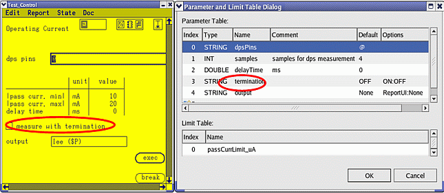
Figure 5: Operating Current Standard Testmethod/DC_TML with termination
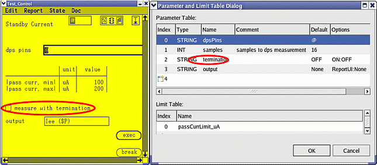
Figure 6: Standby Current Standard Testmethod/DC_TML parameters
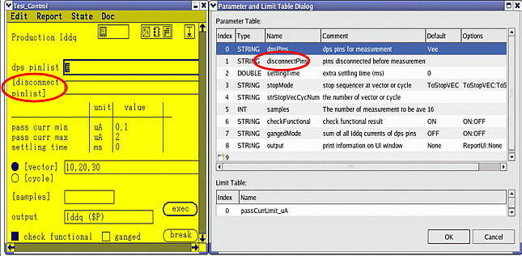
Figure 7: Production Iddq Standard Testmethod/DC_TML parameters
For some PMU functions, for example, General PMU, Output DC and HighZ, generally, it's recommended that you set the Active Load to "OFF" for non-terminated measurements.
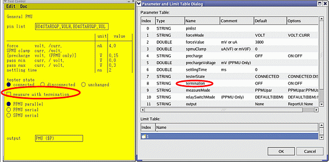
Figure 8: General PMU Standard Testmethod/DC_TML parameters
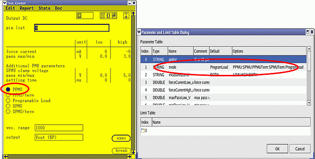
Figure 9: Output DC Standard Testmethod/DC_TML parameters
For Output DC, when using PPMU and SPMU no term modes, set Active Load to "OFF".
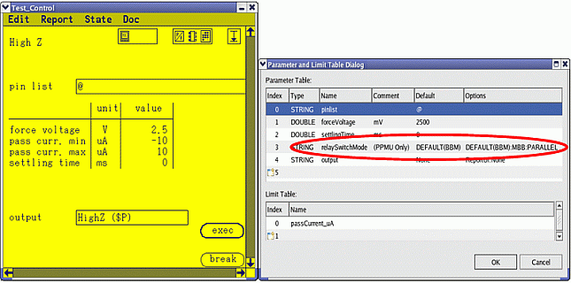
Figure 10: High Z Standard Testmethod/DC_TML parameters
- For the high Z test Standard Test function, the AC relay is initially opened and then the PPMU relay is closed.
- For High Z test TML, the BBM, MBB and PARALLEL modes are available.
- For the BBM mode, the AC relay opens and then the PPMU relay closes.
- For the MBB mode, the PPMU relay closes and then the AC relay opens.
- For the PARALLEL mode, close PPMU relay and open AC relay at the same time.
So, for the High Z Standard Testmethod all the modes, the Active Load should be set to "OFF".
DC relay
Hot switching can become problematic with the DC relay when using the SPMU if the current exceeds 10mA. In this case, add one more step to force 10mA before opening the relay. An enhancement included in SmarTest 6.3.5 and above version has been implemented like this in SPMU_TASK API.
Example code:
//*************************************************************
// Force 0 current before open DC relay when force a big current with SPMU
//*************************************************************
SPMU_TASK task_iForce, task_iForce10mA ;
task_iForce.pin("p1").settling(10 ms).relay("NO").iForce(100 mA).clamp(Vclamp).min(0 V).max(Vclamp);
task_iForce10mA.pin("p1").settling(10 ms).relay("TERM").iForce(10 mA).clamp(Vclamp).min(0 V).max(Vclamp);
task_iForce1m0A .execMode(TM::FORCE_ON) .execute();
task_iForce .execMode(TM::PVAL) .execute();
task_iForce10mA .execMode(TM::FORCE_ON) .execute();
task_iForce10mA .execMode(TM::FORCE_OFF) .execute();Closing the relay also can cause hot switching, but this is not particularly critical, because of the SPMU current clamp.
Perform the pre-charge differently on Single Density and Pin Scale Setups
The hardware design of the Pin Scale PPMU and single-density is different. So to carry out pre-charging is different.
If the program is run on both systems, do a pre-charge in the branches with your own code, or use the DC_TML General PMU in the branch that is implemented. If the wrong sequence is used, there can be a glitch or hot switching.
For single-density, before the PPMU relay connects, the PPMU is programmed in force voltage mode to the pre-charge voltage and switched to the force current mode after the PPMU relay has connected.
So the IFVM sequence with pre-charge for single-density is as follows:
- Force a "PPMU Rail pre-charge voltage" (PPMU is in V force / I measure Mode). The pre-charge voltage should be close to the expected settled voltage when performing the voltage measurement.
- Close PPMU Relay & open AC relay
- Switch PPMU to I-force / V-measure mode.
- Set pass/fail thresholds (limits for the measurements)
- Take voltage measurement
- Open PPMU Relay / close AC relay
For Pin Scale, a clamp circuit is used instead of the pre-charge action for the P/Ce models. There can be a glitch when changing between force voltage and force current modes without the clamp. So the clamps must be programmed to the pre-charge voltage before the PPMU relay connects.
So the IFVM sequence with pre-charge for Pin Scale is as follows:
- Force the current
- Set pass/fail thresholds (limits for the measurements)
- Set voltage clamps to the "pre-charge value" (or limits for the measurements)
- Close PPMU Relay / open AC relay
- Remove voltage clamps (Clamps off)
- Take voltage measurement
- Open PPMU Relay / close AC relay
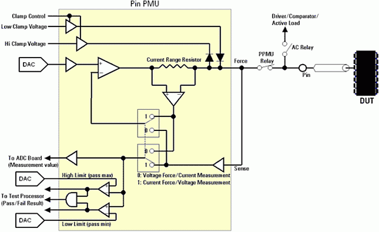
Figure 11: Clamp circuit in Pin Scale PPMU
A code example for using the pre-charge branch:
//************************************************************
// Check if SD or DD system and do PPMU Programming with pre-charge
//************************************************************
PPMU_SETTING setting_IFVM, setting_VFIM;
PPMU_RELAY relay_ppmu_on, relay_off;
PPMU_MEASURE meas1;
PPMU_CLAMP clamp_on, clamp_off;
TASK_LIST tasks1;
setting_IFVM.pin("Pin1").iRange(currentRange1).min(low1).max(high1).iForce(forceCurrent);
setting_VFIM.pin("Pin1").iRange(currentRange2).min(low2).max(high2).vForce(outputV);
relay _on.pin("Pin1").status("OPM_ON");
relay _on.wait(1.3 ms);
relay_off.pin("Pin1").status("OPM_OFF");
meas1.pin("Pin1").execMode(TM::PVAL);
if(GET_TESTER_CLASS()==PINSCALE){
clamp_on.pin("Pin1").status("CLAMP_ON").low(outputV-100 mV).high(outputV+100mV);
clamp_off.pin("Pin1").status("CLAMP_OFF");
}
if(GET_TESTER_CLASS()==PINSCALE)
tasks1.add(setting_IFVM).add(clamp_on).add(relay _on).add(clamp_off).add(meas1).add(relay_off);
else
tasks1.add(setting_VFIM).add(relay _on).add(setting_IFVM).add(meas1).add(relay_off);Avoid unnecessary DISCONNECT/CONNECT
In many cases the insertion of a DISCONNECT/CONNECT is necessary to make a test work. But is it a smart way? Find out the reason why it is necessary and then avoid using it to improve throughput and increase the relay lifetime.
Here are some examples:
- The primary sets of the testsuite are not activated until the next test.
- Do a FLUSH (TM::APRM) or appropriate API/FW command.
- Close/open PPMU relays (using PPMU_ON and PPMU_OFF) to perform a DC measurement, but a
reconnection of the AC relays is forgotten.
- Keep the AC relays connected (AC_ON) if possible.
- The DUT loses its required state.
- Do not reconnect and power up the device from time to time. Use the correct pattern, or setting to set the DUT to the proper state at the end of a test. Or, avoid side effects from previous tests. Good co-operation with the designer and team makes it easier.
References
- Verigy Online Documentation (TDC, see https://www.advantest.com/V93000/help/)
- How to set up HW Independent PPMU Voltage Measurements, Rudolf Giesa, V93000 SOC Test System Application Note